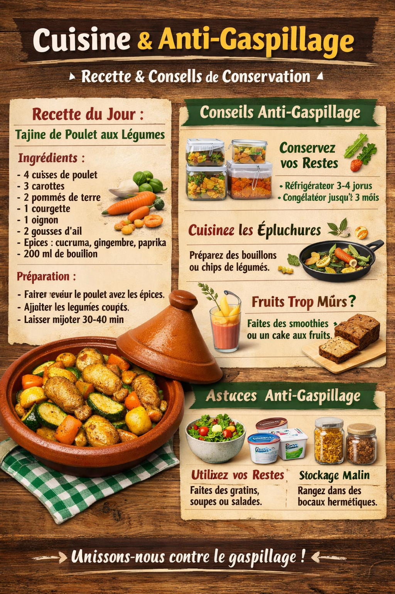

Cuisine durable & savoureuse
Préservez la fraîcheur,
savourez vos recettes
plus longtemps.
Découvrez nos plats délicieux, accompagnés de conseils pratiques pour conserver vos ingrédients, éviter le gaspillage et savourer chaque bouchée au quotidien.
100+
Recettes
50K
Utilisateurs satisfaits
50+
Conseils de conservation
ISO
Certifié 9001

Recette du jour